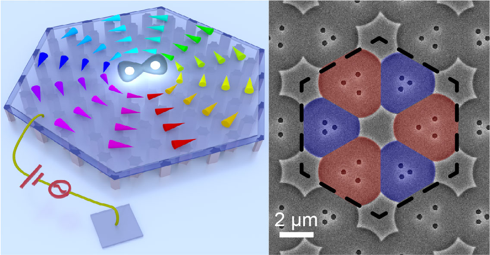

Research Interests

Integrated photonics
Development of photonic integrated circuits (PICs) and photonic crystal surface emitting lasers (PCSELs) for optical information and computing applications.

Quantum light-matter hybrids
Investigation of strong light-matter interactions in novel van der Waals materials, and realization of their macroscopic quantum phases and collective excitations.

Nano-electro-mechanics
Development of advanced nano-electro-mechanical systems (NEMS) for radio-frequency signal processing and quantum phononics.